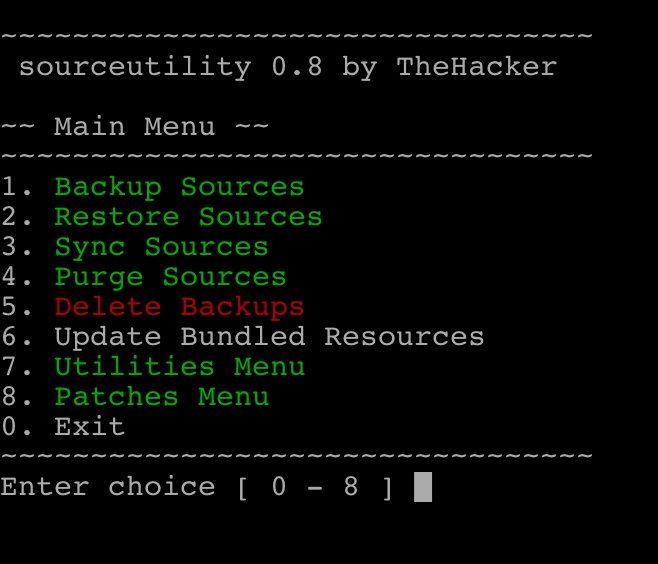
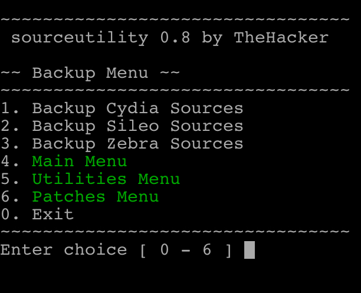
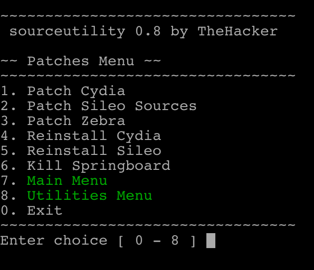

Description
-
The all-in-one utility for managing your already added Cydia and Sileo sources.
-
Run sourceutility in MobileTerminal, NewTerm2, or over SSH to get started.
-
Backups now include a restore script packaged in. This means you can now share backups with other people. Just run the restore.sh script to restore your sources.
-
If you are having any issues with this tool run
sourceutility -tand send me the file at/sourceutility/sourceutility-diag.log.
Simple Select Menu (Screenshot from v0.8)
-



Compatibility
-
Supports iOS 11 - 12.1.2
Dependencies
-
findutils
-
curl
-
rsync
-
grep
-
gawk
-
zip, unzip
Conflicts
-
xyz.skylarmccauley.sourcebackup
-
xyz.skylarmccauley.sourceutility (<=0.6)
Known Issues
- No known issues. Report issues using the contact info below.
Report Issues to
- skylarmccauley864@gmail.com
- TheHacker#9367 (Discord)
In this version
-
May 4, 2019
0.8.3.1
- Fixed a potential bug with backing up Cydia sources
0.8.3
- Small bug fixes
- Added diagnostic test for users having issues
-
May 3, 2019
0.8.2
- Fixed issues with installation and updating bundled resources
- Resources are now downloaded upon installation
0.8.1
- Added compatibility with Chimera
- Updated Bundled Resources to v1.0.1
- Added Chimera/Electra detection when running Sileo Patch, Cydia Patch, Reinstall Cydia, Backup Cydia, and Restore Cydia
Previous Releases
-
April 28, 2019
0.8
- Restore scripts refined for compatibility
- Electra detection added for compatibility
- Refined downloading
- Restore scripts now bundled
- Added option to update bundled resources
-
April 12 - 16, 2019
0.7
- Added support for Zebra
- Added support for unc0ver dark and Misceo
- General improvements to overall experience
- Took a break
- Backups now include a restore script downloaded from GitHub
- Added gawk and grep as a dependency
- sourceutility-legacy removed
-
0.6
- Improved compatibility with different types of jailbreaks
- New menus added
- Can now choose whether to backup/restore Cydia backups, Sileo backups, or both
- Each backup option generates a different file (they cannot be converted)
- Added option to patch Sileo Sources
- Added rsync as a dependency
- Last update to include sourceutility-legacy
-
0.5
- Improved how the Cydia patching works after restoring a backup
- After restoring a backup, the user will be prompted to reinstall Cydia
- After reinstalling Cydia, the user will be prompted to run Diatrus's Cydia Patch from installsileo (installsileo not included)
- Now depends on curl for reinstalling Cydia (downloads from apt.bingner.com)
- Added new menus
- Patches Menu includes options such as Reinstalling Cydia, Killing Sileo, and running the Cydia Patch
- Changed firmware dependency to iOS 11 and above (this may be changed in a future update)
-
0.4-X
- Added some small improvements to the menus
- Added option to kill Cydia and Sileo
- Sileo and Cydia are now killed when attempting to restore or make a backup
- Added a patch that fixes Cydia after a restore. (From Diatrus' Sileo Installer for unc0ver).
- After restoring a backup, users will be prompted to run installsileo to fix some small issues
- Rewrote how backups are made and restored. Old backups are now incompatible
- Readded ability to restore Cydia sources
- Now compatible with source lists installed to /etc/apt/sources.list.d/
- All backups made with versions prior to v0.4 MUST be converted
- General improvements to how some things work
-
0.3-X
- Adjusted Select Menus for notched devices
- Added Utilities Menu
- Cleaned up the menus some more
- Added option to purge Cydia Lists & Sources (left over from debugging)
- Renamed Utilities Menu to Other Utilities Menu
- Added a reboot option in the Other Utilities Menu
- Added some red text here and there so you know which options are dangerous
-
0.2-X
- Fixed a syntax error
- Fixed issues with .DS_STORE files
- Added option to purge .DS_STORE files from previous version
- Backup your Cydia and Sileo sources.
- Restore your Cydia and Sileo source backups.